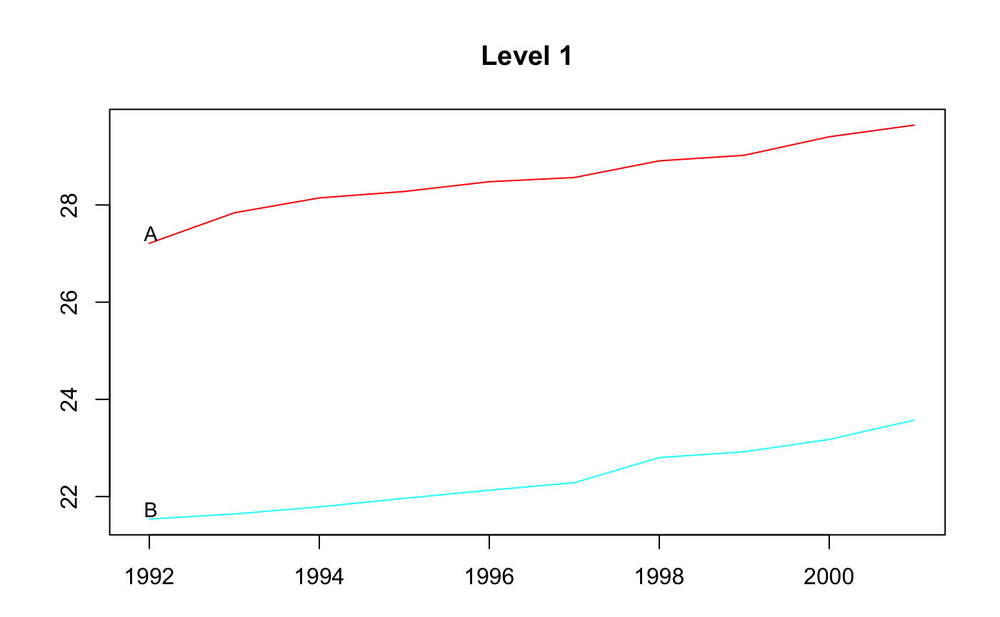
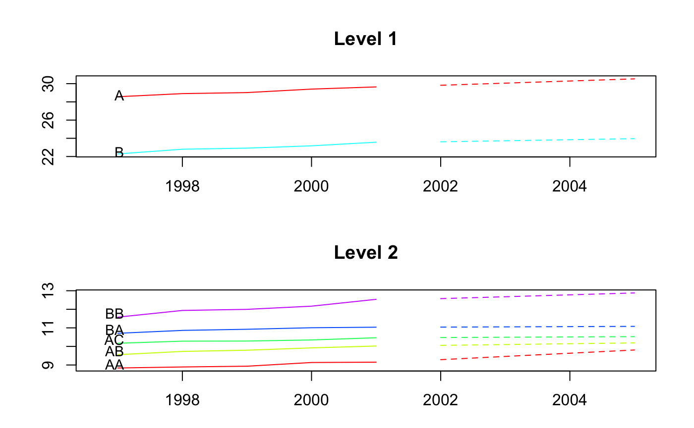

The R package hts presents functions to create, plot and forecast hierarchical and grouped time series.
Installation
You can install the stable version on R CRAN.
You can also install the development version from Github
Usage
Example 1: hierarchical time series
library(hts)
#> Loading required package: forecast
# hts example 1
print(htseg1)
#> Hierarchical Time Series
#> 3 Levels
#> Number of nodes at each level: 1 2 5
#> Total number of series: 8
#> Number of observations per series: 10
#> Top level series:
#> Time Series:
#> Start = 1992
#> End = 2001
#> Frequency = 1
#> [1] 48.74808 49.48047 49.93238 50.24070 50.60846 50.84851 51.70922
#> [8] 51.94330 52.57796 53.21496
summary(htseg1)
#> Hierarchical Time Series
#> 3 Levels
#> Number of nodes at each level: 1 2 5
#> Total number of series: 8
#> Number of observations per series: 10
#> Top level series:
#> Time Series:
#> Start = 1992
#> End = 2001
#> Frequency = 1
#> [1] 48.74808 49.48047 49.93238 50.24070 50.60846 50.84851 51.70922
#> [8] 51.94330 52.57796 53.21496
#>
#> Labels:
#> [1] "Level 0" "Level 1" "Level 2"
aggts1 <- aggts(htseg1)
aggts2 <- aggts(htseg1, levels = 1)
aggts3 <- aggts(htseg1, levels = c(0, 2))
plot(htseg1, levels = 1)
smatrix(htseg1) # Return the dense mode
#> [,1] [,2] [,3] [,4] [,5]
#> [1,] 1 1 1 1 1
#> [2,] 1 1 1 0 0
#> [3,] 0 0 0 1 1
#> [4,] 1 0 0 0 0
#> [5,] 0 1 0 0 0
#> [6,] 0 0 1 0 0
#> [7,] 0 0 0 1 0
#> [8,] 0 0 0 0 1
# Forecasts
fcasts1.bu <- forecast(
htseg1, h = 4, method = "bu", fmethod = "ets", parallel = TRUE
)
aggts4 <- aggts(fcasts1.bu)
summary(fcasts1.bu)
#> Hierarchical Time Series
#> 3 Levels
#> Number of nodes at each level: 1 2 5
#> Total number of series: 8
#> Number of observations in each historical series: 10
#> Number of forecasts per series: 4
#> Top level series of forecasts:
#> Time Series:
#> Start = 2002
#> End = 2005
#> Frequency = 1
#> [1] 53.2149 53.2149 53.2149 53.2149
#>
#> Method: Bottom-up forecasts
#> Forecast method: ETS
fcasts1.td <- forecast(
htseg1, h = 4, method = "tdfp", fmethod = "arima", keep.fitted = TRUE
)
summary(fcasts1.td) # When keep.fitted = TRUE, return in-sample accuracy
#> Hierarchical Time Series
#> 3 Levels
#> Number of nodes at each level: 1 2 5
#> Total number of series: 8
#> Number of observations in each historical series: 10
#> Number of forecasts per series: 4
#> Top level series of forecasts:
#> Time Series:
#> Start = 2002
#> End = 2005
#> Frequency = 1
#> [1] 53.71128 54.20760 54.70392 55.20024
#>
#> Method: Top-down forecasts using forecasts proportions
#> Forecast method: Arima
#> In-sample error measures at the bottom level:
#> AA AB AC BA BB
#> ME 0.0007719336 0.0009183738 0.001003812 0.001043247 0.001087807
#> RMSE 0.1298400018 0.0515879830 0.040306867 0.037462277 0.105015065
#> MAE 0.0978321731 0.0436089571 0.033210387 0.027003846 0.081906948
#> MAPE 1.1275970221 0.4534439625 0.323535559 0.251066115 0.691364891
#> MPE 0.0367879336 0.0069220593 0.006785872 0.007787895 -0.011087494
#> MASE 0.6825678136 0.5197483057 0.774250880 0.447950006 0.493684443
fcasts1.comb <- forecast(
htseg1, h = 4, method = "comb", fmethod = "ets", keep.fitted = TRUE
)
aggts4 <- aggts(fcasts1.comb)
plot(fcasts1.comb, levels = 2)

Example 2: hierarchical time series
# hts example 2
data <- window(htseg2, start = 1992, end = 2002)
test <- window(htseg2, start = 2003)
fcasts2.mo <- forecast(
data, h = 5, method = "mo", fmethod = "ets", level = 1,
keep.fitted = TRUE, keep.resid = TRUE
)
accuracy.gts(fcasts2.mo, test)
#> Total A B A10 A20 B30
#> ME -0.1463168 -0.2229191 0.07660233 -0.2283919 0.005472780 -0.01989880
#> RMSE 0.1500119 0.2452066 0.14257606 0.2523329 0.009805797 0.02928379
#> MAE 0.1463168 0.2229191 0.11693106 0.2283919 0.009268225 0.02409282
#> MAPE 9.3179712 7.5314777 2.36244104 8.7993966 2.460560011 1.71428541
#> MPE -9.3179712 7.5314777 1.45433283 8.7993966 -1.631079601 -1.39920296
#> MASE 0.4617075 1.2506962 0.84324674 1.5148807 0.337389275 0.52860991
#> B40 A10A A10B A10C A20A
#> ME 0.09650113 -0.05448806 -0.1733829 -0.0005209908 0.007965591
#> RMSE 0.17060895 0.06809235 0.1867174 0.0100661166 0.012682474
#> MAE 0.14102388 0.05448806 0.1733829 0.0088897199 0.010413971
#> MAPE 3.98260313 4.37476593 21.6158413 1.5612291069 3.334410408
#> MPE 2.54768302 4.37476593 21.6158413 0.0605205225 -2.607467068
#> MASE 1.51492018 0.51577051 5.3650162 0.6942763126 0.820393749
#> A20B B30A B30B B30C B40A B40B
#> ME -0.002492811 0.01212900 -0.01099794 -0.02102986 -0.04273559 0.1392367
#> RMSE 0.008654148 0.01311771 0.01422607 0.02442915 0.06656885 0.2344656
#> MAE 0.007052515 0.01212900 0.01099794 0.02102986 0.04273559 0.1811449
#> MAPE 13.402921842 4.13200908 2.39939647 3.26532975 3.09570196 8.2253477
#> MPE -2.981389244 4.13200908 -2.39939647 -3.26532975 -3.09570196 5.9207223
#> MASE 0.477277465 0.49670326 1.22312029 1.72843722 0.82335272 4.3982548
accuracy.gts(fcasts2.mo, test, levels = 1)
#> A B
#> ME -0.2229191 0.07660233
#> RMSE 0.2452066 0.14257606
#> MAE 0.2229191 0.11693106
#> MAPE 7.5314777 2.36244104
#> MPE 7.5314777 1.45433283
#> MASE 1.2506962 0.84324674
fcasts2.td <- forecast(
data, h = 5, method = "tdgsa", fmethod = "ets",
keep.fitted = TRUE, keep.resid = TRUE
)
plot(fcasts2.td, include = 5)